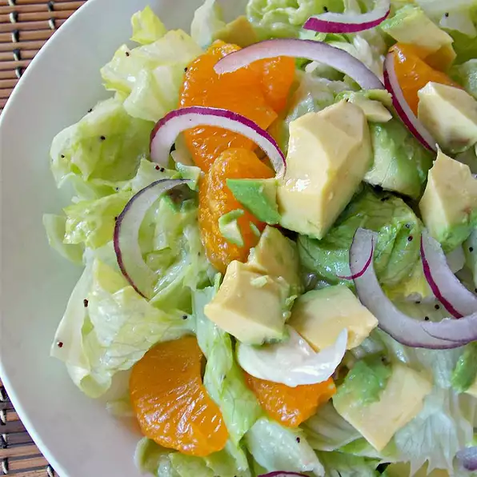

Home
Green Salad

Direction
Description
Cook:
5 mins
Total:
20 mins
Prep:
15 mins
Servings:
8
Yield:
8 servings
Ingredients
- 1 cup sliced almonds
- 3 tablespoons red wine vinegar
- ⅓ cup olive oil
- ¼ cup fresh cranberries
- 1 tablespoon Dijon mustard
Steps
- Step 1
Preheat oven to 375 degrees F (190 degrees C). Arrange almonds
in a single layer on a baking sheet. Toast in oven for 5 minutes,
or until nuts begin to brown.
- Step 2
Remove bay leaf, and stir in lemon juice and cayenne pepper.
Simmer 5 more minutes.